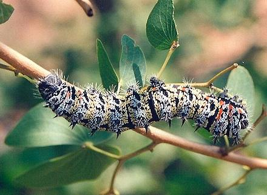

Mopane Worm

[Mahonja, Phane (Botswana); Masotsa, mashonzha, matamani, masonja,
iinnondo (South Africa); Muyaya, finkubala, ifishimu (Zambia);
Madora, Amacimbi, Macimbi Masodya, Mashonja, Mahonja (Zimbabwe);
Omagungu, Oshuungu (Namibia); Mingolo (D.R. Congo):
Gonimbrasia belina]
In some regions of Southern Africa, these large moth caterpillars are a
popular delicacy, but in other regions, millions of indigenous peoples depend
on them for protein in their diets. They are picked by hand, mainly by women
and children, and processed at home to preserve for future use, as their
season is quite short.
Mopane worms are very nutritious, with an outstandingly high protein
content and good mineral suite, but they are now threatened by overharvest,
loss of habitat, and global warming. There is significant effort being put
into farming them because the demand remains high.
Photo by JackyR, distributed under license Creative Commons
Attribution Share-Alike v2.5 Generic.
More on Insects, Arachnids & Myriapods.
Preparing Fresh:
When a Caterpillar is captured the tail end
is pinched off and the caterpillar is wrung out from front to back to clear
the gut of icky green stuff. At home, the caterpillars are washed well, then
simmered without additional water, but plenty of salt. Finally, they are set
out to dry in the sun, or may be smoked over a fire. Commercially they are
canned in brine, or with tomato and chili sauce.
Buying:
Dried Mopane are available from multiple on-line
sources in North America when in season, but are sold out most of the year.
They are very expensive here, even compared to other edible insects, at
about 2021 US $18 for 50 grams (1-3/4 ounce).
Cooking:
Dried caterpillars can be eaten as a crunchy snack,
but they are often re-hydrated and stewed with onions, tomatoes and spices.
For an example, see our recipe
Mopane Worm Stew.
ai_mopanez 210518 - www.clovegarden.com
©Andrew Grygus - info@clovegarden.com - photos on this
page not otherwise credited are © cg1 -
Linking to and non-commercial use of this page permitted